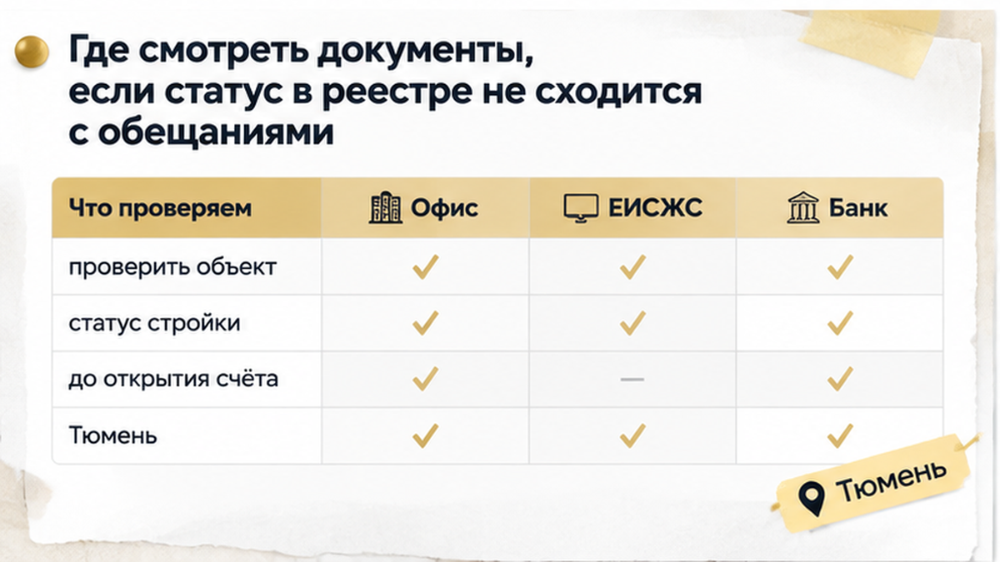
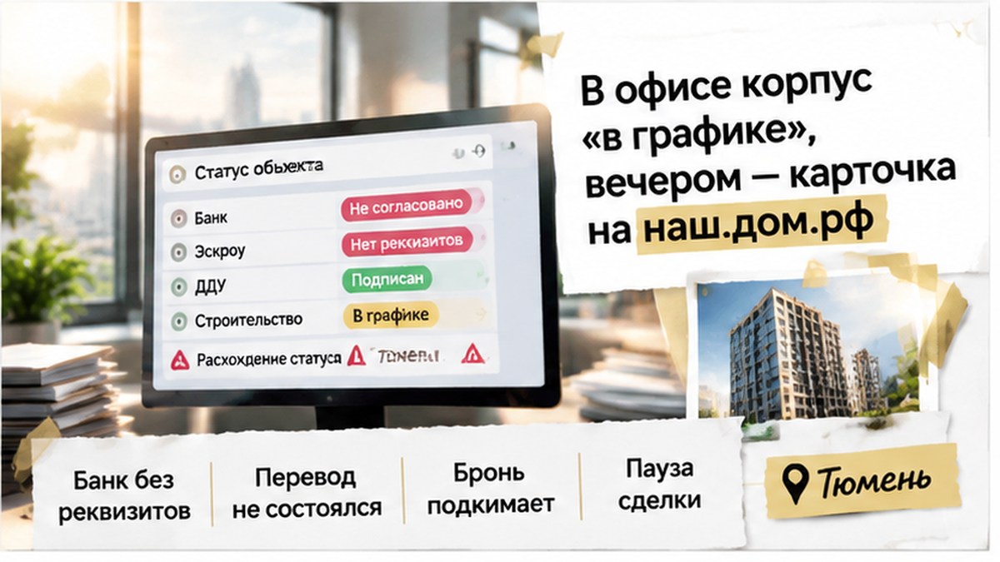
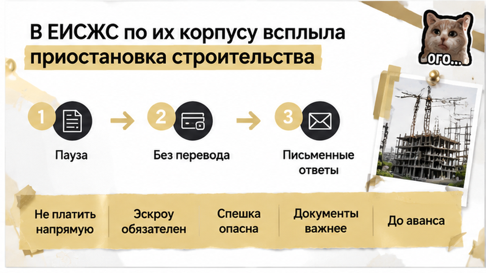
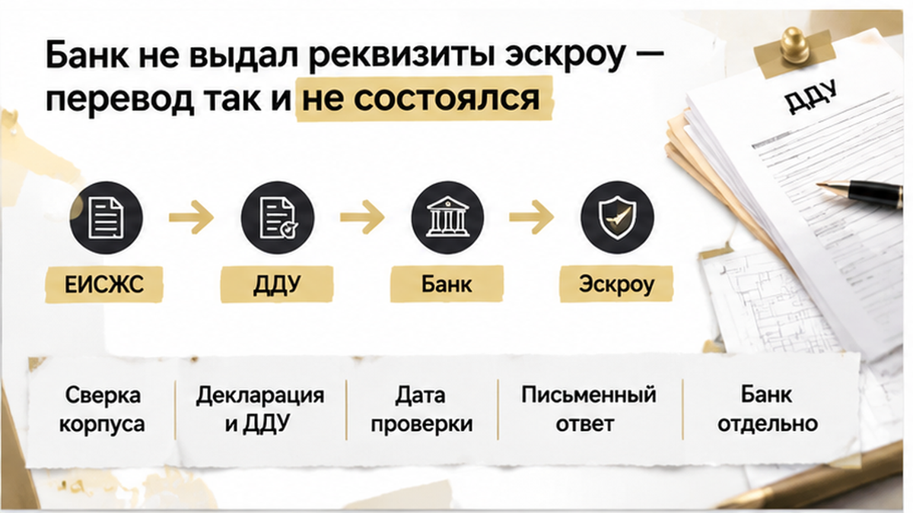
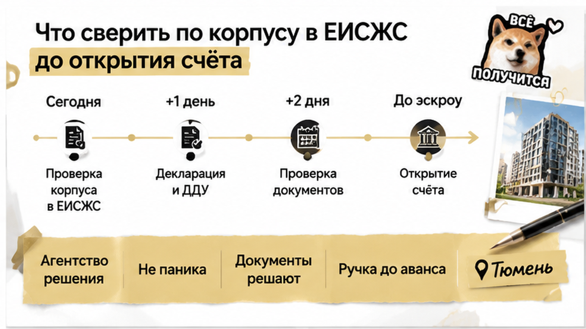

За 2 дня до открытия эскроу семья из Тюмени увидела в ЕИСЖС приостановку строительства своего корпуса — и не открыла счёт. Семейную ипотеку банк уже одобрил, квартиру забронировали, впереди оставались документы и расчёты. Неделей раньше в офисе продаж говорили, что дом идёт по графику, и ничего похожего на остановку в разговоре не прозвучало. Но срок брони поджимал, а покупатели решили сами посмотреть сведения о доме на наш.дом.рф. Там обещания офиса и запись по их корпусу разошлись — как раз перед шагом, за которым должны были последовать деньги.
В новостройке важно не только выбрать планировку, но и разобраться, за что собираетесь платить. В Telegram и MAX разбираю такие истории по Тюмени: где обещания сходятся с документами, а где перед сделкой лучше притормозить.
К этому моменту квартира для семьи уже перестала быть одним из вариантов. Бронь оформлена, с банком договорились, менеджер назвал дату открытия эскроу — специального счёта, где деньги покупателя хранятся до выполнения условий по строительству. Когда столько всего позади, очень хочется считать оставшиеся действия простой формальностью: приехать, подписать, получить реквизиты.
Именно здесь легко перепутать две разные вещи. Банк одобрил ипотеку семье — это ещё не значит, что по выбранному корпусу можно без вопросов провести сделку. Кредитное решение касается заёмщиков и условий кредита, а документы дома и возможность открыть эскроу требуют отдельной проверки. Одно не заменяет другое, даже если в офисе уже обсуждают день подписания.
Семья решила посмотреть именно свой корпус, а не общую страницу жилого комплекса. У соседних домов могут отличаться сроки, документы и ход работ, хотя на рекламном буклете у них одно название. Поэтому фраза «у нас всё строится» сама по себе мало что объясняет покупателю конкретной квартиры.
Такая путаница возникает не только при вопросах к стройке. Уже разбирал, почему одобрение семейной ипотеки ещё не означает, что эскроу можно открыть. Для покупателя разница существенная: согласованный кредит есть, а готовность следующего шага ещё нужно подтвердить.
В офисе у семьи была понятная картина: корпус идёт по графику, бронь скоро закончится, затягивать не стоит. Когда появились вопросы к сведениям, покупателям обещали всё исправить уже на следующий день. Звучит успокаивающе — будто речь о небольшой заминке, которую можно оставить менеджеру и спокойно заниматься сделкой.
Только из обещания «завтра поправим» непонятно, что именно собираются поправить. Ошибку в карточке, устаревший документ или само положение дел на стройке? Пока ответа нет, покупатель не может отличить техническую задержку от проблемы, которая повлияет на его решение. А срок брони при этом продолжает идти.

Это ещё не повод объявлять дом безнадёжным, а менеджера — обманщиком. Но и соглашаться на объяснение только потому, что оно удобное, семье было не с руки: впереди покупка квартиры, а не мелкий заказ. Им требовалось понять, почему официальные сведения расходятся с рассказом в офисе и чем застройщик может подтвердить свои слова.
Вечером покупатели открыли карточку корпуса уже с конкретным вопросом, а не просто посмотреть фотографии стройки. Нужно было разобраться, что сейчас указано по дому и совпадает ли это с документами, которые готовили к подписанию. Разговор о скором окончании брони этого вопроса не снимал.
Теперь семье нужно было разобраться не с обещанием «всё по графику», а с конкретной записью по дому. В ЕИСЖС — государственной системе со сведениями о новостройках — по их корпусу была указана приостановка строительства. Это уже нельзя было отложить до получения ключей: через два дня покупатели рассчитывали открыть эскроу, а ясности, что происходит со стройкой, не было.
Семья открыла проектную декларацию, проверила разрешение на строительство и сопоставила сроки с черновиком ДДУ — договора на покупку квартиры в строящемся доме. Нужны были документы именно по выбранному корпусу. Соседний дом может строиться вовсю, но покупают-то квартиру не в нём, и его готовность ничего не объясняет в документах этой сделки.
В офисе обещали исправить вопрос на следующий день и напоминали про бронь. Только что именно собирались исправлять? Ошибку в карточке, устаревшие сведения или документы по стройке? От ответа зависело решение семьи, а слово «завтра» само по себе не делало картину понятнее. Если речь действительно об ошибке, нужно увидеть её исправление и основание, а не просто ещё раз услышать успокаивающее объяснение.
Запись о приостановке — повод остановиться и разобраться, а не готовый приговор дому. Она сама по себе не доказывает, что застройщик не достроит корпус или что сделку придётся отменять. Но и считать её пустяком только потому, что квартира понравилась, нельзя. Пока документы говорят одно, а продавец другое, покупателю предлагают принять решение без ответа на самый неудобный вопрос.

Следующий вопрос был уже к банку: готов ли он открыть эскроу по этому корпусу и этому договору? Семейную ипотеку одобрили, но кредитное решение не заменяло проверку самой сделки. Почему эти этапы нельзя склеивать в одно «банк всё проверил», разобрано в истории, где семейную ипотеку одобрили, а эскроу не открыли.
Банк открытие эскроу не подтвердил и реквизиты для перевода не выдал. До прояснения сведений по корпусу сделка дальше не пошла. Здесь важно не дописывать за банк причину: из этой истории не следует, что любая отметка о приостановке автоматически означает отказ. По конкретному объекту требовалась ясность, и на тот момент её не было.
Семье эта пауза была неудобна: квартира выбрана, ипотека одобрена, срок брони поджимает. Но срок брони не отвечает на вопрос, что происходит с домом. У бронирования свои условия, в том числе по возврату или удержанию денег, и семья отдельно проверяла этот договор. Обещание менеджера сохранить квартиру не заменяет того, что написано в подписанной бумаге.

Обойти такую паузу оплатой напрямую застройщику — не значит решить вопрос с эскроу. При предусмотренных договором расчётах через специальный счёт обычный перевод не становится ему заменой. Спешка здесь не убирает расхождение в документах, а лишь переносит разбирательство на время, когда деньги уже ушли.
В итоге эскроу не открыли, деньги за квартиру не переводили, подписание остановили до письменных объяснений и повторной проверки карточки. Подтверждённого ответа, что вопрос устранён, в этой истории нет. Зато семья не стала завершать сделку только ради того, чтобы успеть в срок брони: дальнейшее решение оставалось за ней, после ответов банка и застройщика.
Стоит ли рисковать бронью и останавливать сделку, если в ЕИСЖС по вашему корпусу указана приостановка строительства, а офис торопит открыть эскроу?
Стоит ли рисковать бронью и останавливать сделку, если в ЕИСЖС по вашему корпусу указана приостановка строительства, а офис торопит открыть эскроу?
Здесь не нужно становиться строителем или юристом. Нужно понять, про один и тот же дом говорят менеджер, документы и банк. Откройте на наш.дом.рф именно свой корпус: у соседнего могут быть другие сроки и совсем другая ситуация с работами. Сравните адрес и номер корпуса с бронью и черновиком ДДУ — договора, по которому покупаете квартиру.
Дальше смотрите документы вместе, а не каждый сам по себе. В проектной декларации — сведения о доме и застройщике, в разрешении на строительство — к какому объекту оно относится и срок действия, в ДДУ — ваша квартира, цена и срок передачи. В карточке корпуса важны ход работ и дата обновления сведений. Если офис обещает одно, а документы показывают другое, именно это расхождение и отправляйте застройщику письменно.

Сохраните карточку с датой проверки и попросите объяснить, что означает запись о приостановке, на каком основании её собираются менять и чем подтверждаются заявленные сроки. Сам по себе старый документ ещё не доказывает, что стройка сорвана. Но и обещание «завтра поправим» не объясняет, что происходит сегодня. Банку нужен отдельный вопрос: готов ли он открыть эскроу по этому корпусу и чего не хватает для решения.
С бронью тоже без догадок: возможность возврата и удержания денег зависит от её условий. Если время уходит на проверку, просите письменное продление, а не только обещание менеджера подождать. Перевод на расчётный счёт застройщика не заменяет эскроу. Сохранять квартиру таким способом, пока причина остановки сделки неясна, — не решение вопроса.
Основа для разговора — карточка корпуса, документы застройщика и ответ банка, а не рекламная презентация. Причём банковское «вам одобрено» бывает очень убедительным: кажется, проверять больше нечего. Почему это не так, разобрал отдельно: семейную ипотеку одобрили, а эскроу не открыли. Кредитное решение и готовность конкретной сделки — не одно и то же.
Если вместо объяснений присылают новый договор или другие реквизиты, спешка тем более не помощник. В истории, где в реквизитах оказалось чужое юридическое лицо, решающей стала сверка до открытия счёта. А расхождение между обещаниями и документами бывает не только в сроках: вот разбор, где в декларации земля была в аренде, а в брони обещали собственность.

Пауза неприятна: квартиру уже выбрали, ипотеку согласовали, мысленно покупка почти состоялась. Но покупатель не обязан закрывать чужое расхождение своими деньгами. Можно оставить вопрос открытым до документов — без обещания, что всё обязательно наладится, и без вывода, что от новостройки теперь надо отказаться навсегда.
Следующий шаг здесь вполне конкретный: получить письменные ответы и понять, устранена ли причина остановки. Тогда продолжение сделки будет решением семьи, а не уступкой сроку брони.
Выбираете новостройку в Тюмени — подключусь до брони, разберём документы до аванса и открытия эскроу. Напишите Святославу: +7 922 001 65 05. Разборы сделок и новости рынка — в Telegram и MAX.